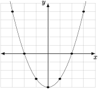

Introduce graphs of functions and produce simple graphs by plotting points and using number snese.
Evaluate functions and solve equations of the form \(f(x) = C\text{,}\) where \(C\) is constant, using the graph of a function.
Find the domain and range of a function from its graph.
Until now, our development has regarded a function as only slightly different than an algebraic expression. Algebraic expressions represent processes applied to their variables (the inputs), just like functions. The function concept blends this idea with solving equations by considering the evaluation result (the output) as a key piece; the output is a number that the function can equal for some input, which may be solved for. The graph of a function takes us a step further, so that we may see the totality of all inputs and outputs of the function as a single object, the graph of the function.
The graph of a general function of the form \(y = f(x)\) is a set of points in the \(xy\)-plane (or whatever the input and output variables happen to be). To plot a single point \((a,b)\) in the \(xy\)-plane, we move a distance of \(a\) along the \(x\)-axis (the horizontal axis), then a vertical distance \(b\) from there (the vertical axis is the \(y\)-axis as in the following figure:
Figure4.2.1.Plotting the point \((a,b)\) in the plane.
Remark4.2.2.
The \(xy\)-plane with coordinates like this is called the Cartesian plane after Rene Descartes. He supposedly thought of it while thinking about how to describe the position of a fly on his ceiling while lying in bed.
Definition4.2.3.The Graph of a Function.
The graph of \(y = f(x)\) is the set of all points in the \(xy\)-plane that satisfy the equation \(y=f(x)\text{.}\) Stated another way we have the following equivalence:
\begin{equation*}
(a,b)\ \text{is on the graph of } y=f(x)\ \text{ if and only if }\ b = f(a).
\end{equation*}
To sketch the graph of a function, one starts by finding a reasonable number of points on the graph, often putting them in an input-output table, then plotting them in the plane. When a general pattern is evident, we usually fill in between the plotted points with a smooth curve.
First, we will find some pairs of points on the graph by evaluating the function for some \(x\)-values and recording the results in a table:
Table4.2.5.Input-output table for \(y = f(x) = x^2-4\text{.}\)
\(x\)
\(-3\)
\(-2\)
\(-1\)
\(0\)
\(1\)
\(2\)
\(3\)
\(y = f(x) = x^2-4\)
\(5\)
\(0\)
\(-3\)
\(-4\)
\(-3\)
\(0\)
\(5\)
Then we plot the points according to the table and fill in a curve:

Figure4.2.6.The graph of \(y=f(x)=x^2-4\text{.}\)
Technology4.2.7.
Graphing by hand, without the aid of technology, is a good skill that helps solidify the concept of the graph of a function. However, you will also want to use technology to both check your work and discover new concepts. Two places you can graph using technology are as follows:
Use the Calc button in this e-book. The calculator the comes up is a graphing calculator powered by Geogebra ( http://geogebra.org). Just type \(y=x^2-4\) (or whatever function you wish to graph) to graph.
Desmos graphing calculator ( http://www.desmos.com/calculator) is a favorite. Again, just type in the function you want to graph. We will use Desmos extensively when we study function families in the next chapter.
On your own paper, carefully graph the following functions by plotting at least six points. (Check your work with the technology of your choice.)
\(f(x) = 3x-2\)
\(g(x) = \sqrt{x}\)
\(h(x) = \dfrac{1}{x}\) (Be sure to plot several points with \(x\) values between \(-1\) and \(1\text{.}\))
Equipped with graphs of functions, we may now catalog graphical interpretations of many of the skills and concepts we have encountered so far.
Key Concepts4.2.9.Graphical Interpretations of Algebraic Skills with Functions.
To evaluate a function at some value \(x=a\text{,}\) move to the \(a\) position on the horizontal axis and then find the vertical coordinate on the graph above or below that point.
To solve an equation of the form \(f(x) = b\text{,}\) find the \(x\)-coordinates of all points on the graph whose \(y\)-coordinate is \(b\text{.}\)
To solve an equation of the form \(f(x) = g(x)\text{,}\) we are asking for the input values such that \(f\) and \(g\) give the same output. Hence we must find the \(x\)-coordinates of all points of intersection between the graphs of \(f\) and \(g\text{.}\)
The domain of a function is the set of \(x\)-coordinates of all points on the graph. This may be visualized as the set of values on the horizontal axis that lie above or below the graph of the function.
The range of a function is the set of \(y\)-coordinates of all points on the graph. This may be visualized as the set of values on the vertical axis that lie to the left or right of the graph of the function.